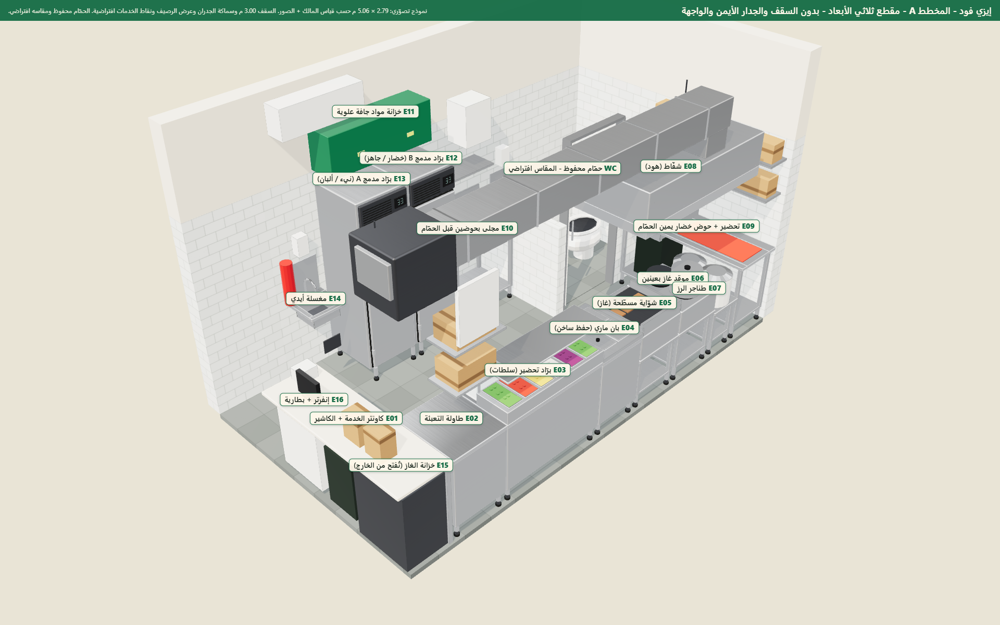
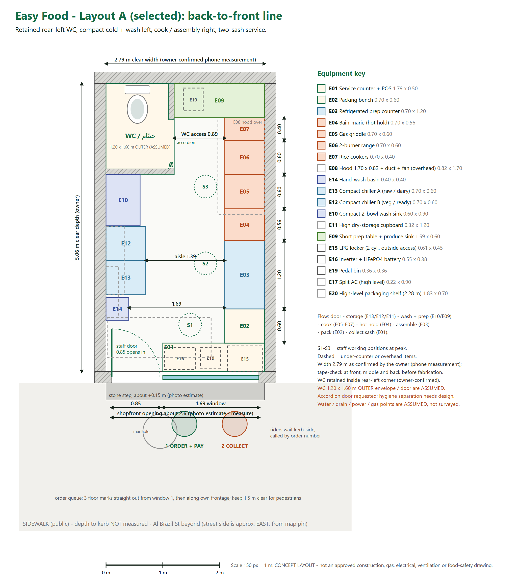
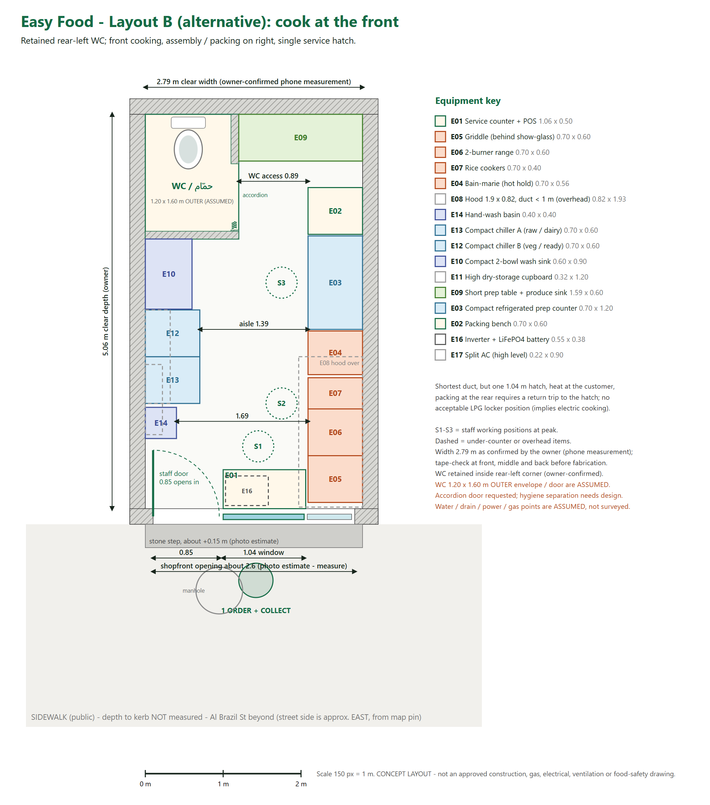
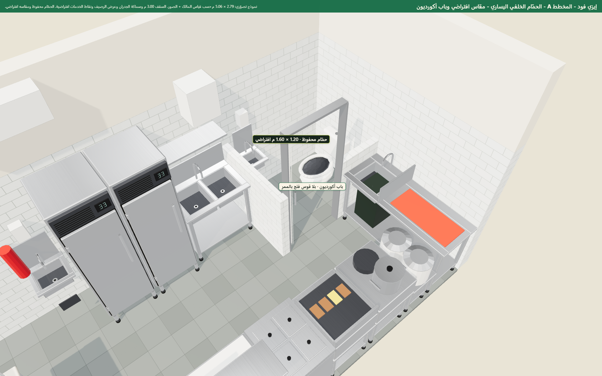

إيزي فود · دمشق، شارع البرازيل
من الفكرة
إلى تفاصيل المطبخ.
استكشف تصميم المحل، جرّب توزيعتَي المطبخ في النموذج التفاعلي، وتصفّح الهوية البصرية والملفات في مكان واحد.

المطبخ والمخططات
KITCHEN & LAYOUTS





مقاسات المحل المورّدة: عرض ٢٫٧٩ م وعمق ٥٫٠٦ م. المخططات والنموذج تصوّر أولي؛ أبعاد الحمّام والخدمات وبعض التجهيزات افتراضية وتحتاج قياسًا موقعيًا قبل التنفيذ. ملف العرض ثلاثي الأبعاد بحجم ٢٢ ميغابايت تقريبًا، وقد يستغرق تحميله بعض الوقت.
الهوية البصرية
VISUAL IDENTITY · GREENأكلك الصحي، بكل بساطة.
Eat smart.
Live easy.
الشعار، الألوان، المنيو، التغليف وقوالب السوشال. تصفّح النسخة الخضراء من هوية إيزي فود أو حمّل دليلها.
تطبيقات الهوية وصور الطعام تصوّرات للعرض. تُراجع المقاسات ومواصفات الطباعة مع المورد قبل الإنتاج.